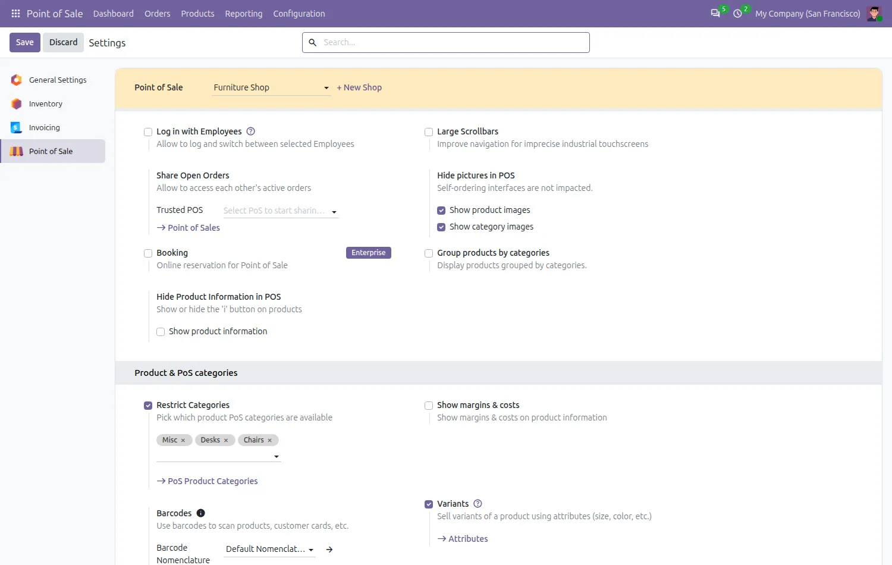
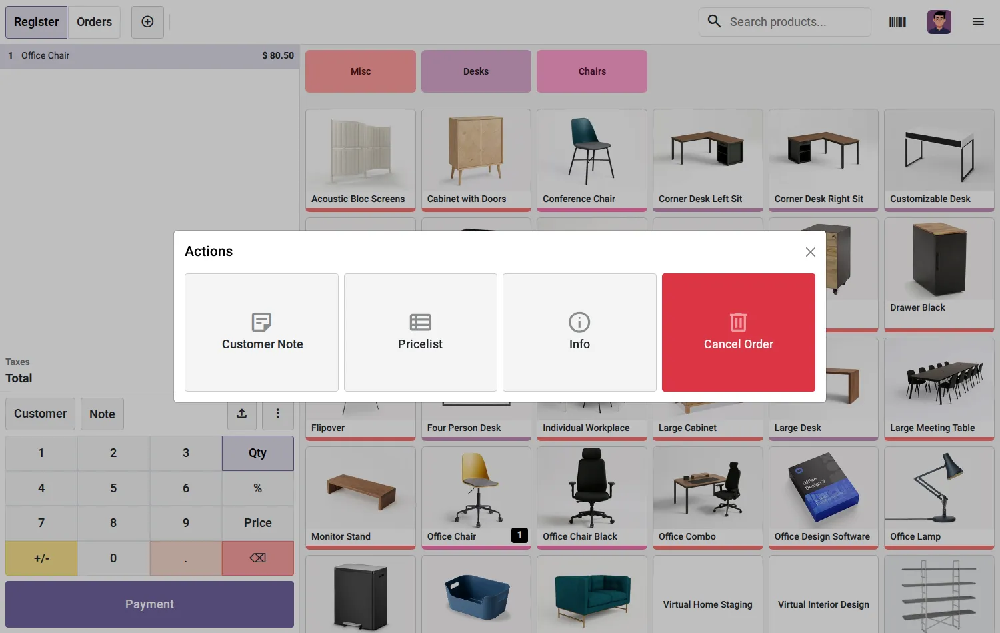

Hide Product Information in POS
Show or hide the product info button in the POS product screen per Point of Sale
- Price
- $3.99
- Odoo versions
- 16.0
- 17.0
- 18.0
- 19.0
- 20.0
- Technical name
tamadoo_hide_product_information_in_pos- License
- OPL-1
Odoo 20.0: not listed on the store yet. Ask at tama.odoo@gmail.com.

Text and screenshots below are from the Odoo 20.0 version of this module.
Screenshots
1. Enable / disable from POS Settings
Settings --> Point of Sale --> PoS Interface --> "Show product information"

2. Info button available (option ON)
The Info action button appears in the POS Actions.

3. Info button hidden (option OFF)
The Info action button is removed from the POS Actions.

Step by step
1. Open the POS settings
Open Point of Sale → Configuration → Settings and choose the point of sale at the top of the page.
2. Set the option
In the PoS Interface section, tick or untick Show product information and save.
3. Reload the POS
Open a new POS session, or reload the POS page when a session is already open.
4. Check the result
With the option off, the Info button is removed from the POS Actions. With the option on, it is shown as before.
Get Hide Product Information in POS
Odoo 20.0: not listed on the store yet. Ask at tama.odoo@gmail.com.
Questions before buying? Write to tama.odoo@gmail.com.